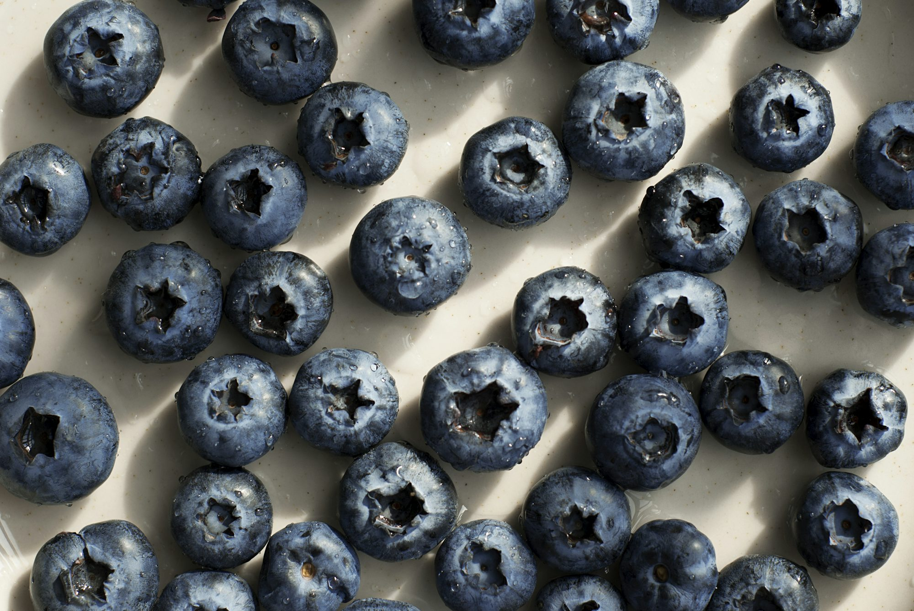

Decadent Delights: A Global Exploration of Desserts
Cakes: A Celebration of Flavors
Cakes are often the centerpiece of any celebration, symbolizing joy and indulgence. They come in myriad shapes, sizes, and flavors, reflecting the creativity of bakers around the world.
Sponge Cake: A classic base for many desserts, sponge cake is known for its light and airy texture, achieved by incorporating whipped eggs into the batter. This versatile cake can be enjoyed plain, layered with cream and fruits, or frosted to perfection for birthdays and weddings.
Black Forest Cake: Originating from Germany, this indulgent dessert combines layers of chocolate sponge cake, cherries, and whipped cream. The rich chocolate flavor, complemented by the tartness of the cherries, creates a harmonious balance that delights the palate.
Mille-Feuille: Known as Napoleon in some cultures, this French pastry consists of layers of puff pastry filled with pastry cream. The crispy layers and creamy filling create a delightful textural contrast, making it a favorite in patisseries across France.
Pies and Tarts: Timeless Comfort
Pies and tarts evoke feelings of nostalgia, often reminding us of family gatherings and home-cooked meals.
Pumpkin Pie: A staple during the fall and holiday seasons in the United States, pumpkin pie features a spiced custard filling made from pureed pumpkin, sugar, and a blend of warm spices. Its rich flavor and creamy texture make it a beloved dessert at Thanksgiving dinner.
Custard Tart: This classic dessert features a buttery crust filled with smooth custard, often flavored with vanilla or nutmeg. Served chilled or at room temperature, custard tarts offer a comforting sweetness that can be enjoyed year-round.
Fruit Galette: A rustic dessert that highlights seasonal fruits, fruit galettes consist of a free-form pastry crust filled with fresh fruits like apples, berries, or peaches. The simplicity of the galette allows the natural sweetness of the fruit to shine, making it a delightful end to any meal.
Cookies: A World of Crunch
Cookies are beloved snacks that come in various shapes and flavors, making them perfect for any occasion.
Snickerdoodles: These soft, cinnamon-sugar cookies are a classic American favorite. Their chewy texture and warm, spiced flavor make them a comforting treat that pairs perfectly with a glass of milk.
Biscotti: Originating from Italy, biscotti are twice-baked cookies that are crisp and dry. Often flavored with almonds or hazelnuts, they are perfect for dipping in coffee or tea, making them a popular choice for afternoon snacks.
Polvorones: These traditional Spanish cookies are made with ground almonds and dusted with powdered sugar. Their crumbly texture and rich flavor make them a delightful treat, especially during the holiday season.
Frozen Desserts: Chill Out with Sweetness
Frozen desserts are a refreshing way to enjoy sweetness, particularly on warm days.
Sorbet: This dairy-free frozen treat is made from fruit puree and sugar, offering a light and refreshing option. Popular flavors include mango, raspberry, and lemon, providing a burst of fruity flavor that’s perfect for cleansing the palate.
Gelato: An Italian favorite, gelato is creamier and denser than regular ice cream, with less air and fat. Its intense flavors—ranging from rich chocolate to fresh fruit—make it a favorite among dessert enthusiasts.
Frozen Yogurt: A lighter alternative to ice cream, frozen yogurt is made from yogurt and comes in a variety of flavors. Often topped with fresh fruits, nuts, and syrups, it’s a customizable treat that satisfies sweet cravings while feeling a bit healthier.
Pastries: Artistry in Every Bite
Pastries are often crafted with skill and precision, showcasing the artistry of bakers around the world.
Danish Pastry: Known for its flaky texture and sweet fillings, Danish pastries are often enjoyed for breakfast or as a dessert. They can be filled with fruit, cream cheese, or almond paste, making them versatile and delicious.
Puff Pastry: This buttery, flaky pastry is used in a variety of desserts, including palmiers and turnovers. Its light texture and rich flavor make it a favorite for both sweet and savory dishes.
Baklava: A sweet pastry from the Middle East, baklava consists of layers of filo dough filled with chopped nuts and sweetened with honey or syrup. Its rich flavor and crunchy texture make it a popular dessert for celebrations.
Creamy Indulgences: The Richness of Custards
Custards and creams offer a rich and luxurious end to any meal, known for their smooth textures and delightful flavors.
Crème Brûlée: This French classic features a rich custard base topped with a layer of caramelized sugar. The contrast between the smooth custard and the crunchy topping creates a luxurious dessert that is often served in elegant ramekins.
Panna Cotta: Another Italian delight, panna cotta is a creamy dessert thickened with gelatin. Often flavored with vanilla and served with fruit coulis, it offers a silky texture that melts in your mouth.
Flan: This caramel custard is popular in many Latin American countries. Made with eggs, milk, and sugar, flan has a silky texture and is often topped with rich caramel sauce, making it a sweet end to any meal.
Unique Cultural Delights
Desserts often reflect the unique cultural practices of different regions, offering a glimpse into their culinary traditions.
Mochi: A traditional Japanese dessert made from glutinous rice, mochi is chewy and can be filled with sweet red bean paste or ice cream. Its unique texture and flavors make it a popular treat during festivals and special occasions.
Tiramisu: This iconic Italian dessert is made with layers of coffee-soaked ladyfingers and a rich mascarpone cheese mixture. Tiramisu's combination of coffee and cream creates a delightful balance, making it a favorite among coffee lovers.
Dulce de Leche: A sweet caramel-like sauce made from slowly cooking sweetened milk, dulce de leche is a beloved ingredient in Latin America. It can be used as a filling for cakes, drizzled over ice cream, or enjoyed by the spoonful.
Conclusion: The Sweet Language of Desserts
Desserts are a universal language of love, celebration, and tradition. They connect us to our roots and to each other, showcasing the diverse flavors and techniques that span cultures and generations. As we indulge in these sweet creations, we not only savor their deliciousness but also appreciate the stories and histories behind them. Whether it's a slice of cake, a delicate pastry, or a bowl of creamy custard, desserts remind us of the joy of sharing and celebrating life’s sweetest moments.